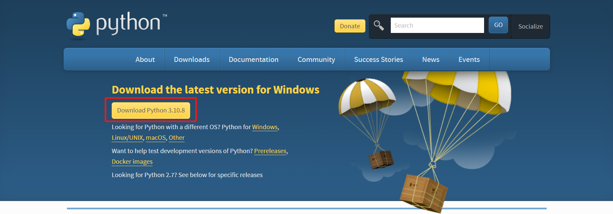

Introduction to Python
What is Python?
Python is a computer programming language often used to build websites and software, automate tasks, and conduct data analysis. Python is a general-purpose language, meaning it can be used to create a variety of different programs and isn’t specialized for any specific problems. This versatility, along with its beginner-friendliness, has made it one of the most-used programming languages today. A survey conducted by industry analyst firm RedMonk found that it was the second-most popular programming language among developers in 2021
History of Python
Python was created by Guido van Rossum, and first released on February 20, 1991. While you may know the python as a large snake, the name of the Python programming language comes from an old BBC television comedy sketch series called Monty Python’s Flying Circus.
One of the amazing features of Python is the fact that it is actually one person’s work. Usually, new programming languages are developed and published by large companies employing lots of professionals, and due to copyright rules, it is very hard to name any of the people involved in the project. Python is an exception.
Of course, Guido van Rossum did not develop and evolve all the Python components himself. The speed with which Python has spread around the world is a result of the continuous work of thousands (very often anonymous) programmers, testers, users (many of them aren’t IT specialists) and enthusiasts, but it must be said that the very first idea (the seed from which Python sprouted) came to one head – Guido’s.
Python is maintained by the Python Software Foundation, a non-profit membership organization and a community devoted to developing, improving, expanding, and popularizing the Python language and its environment.

Guido van Rossum
Why is Python so popular?
Python is popular for a number of reasons. Here’s a deeper look at what makes it so versatile and easy to use for coders.
There are also a couple of factors that make Python great for learning:
• It is easy to learn – the time needed to learn Python is shorter than for many other languages; this means that it’s possible to start the actual programming faster;
• It is easy to use for writing new software – it’s often possible to write code faster when using Python;
• It is easy to obtain, install and deploy – Python is free, open and multiplatform; not all languages can boast that.
What is Python used for?
Python is commonly used for developing websites and software, task automation, data analysis, and data visualization. Since it’s relatively easy to learn, Python has been adopted by many non-programmers such as accountants and scientists, for a variety of everyday tasks, like organizing finances.
“Writing programs is a very creative and rewarding activity”
What can you do with python? Some things include:
• Data analysis and machine learning
• Web development
• Automation or scripting
• Software testing and prototyping
• Everyday tasks
Data analysis and machine learning
Python has become a staple in data science, allowing data analysts and other professionals to use the language to conduct complex statistical calculations, create data visualizations, build machine learning algorithms, manipulate and analyze data, and complete other data-related tasks.
Python can build a wide range of different data visualizations, like line and bar graphs, pie charts, histograms, and 3D plots. Python also has a number of libraries that enable coders to write programs for data analysis and machine learning more quickly and efficiently, like TensorFlow and Keras.
Web development
Python is often used to develop the back end of a website or application—the parts that a user doesn’t see. Python’s role in web development can include sending data to and from servers, processing data and communicating with databases, URL routing, and ensuring security. Python offers several frameworks for web development. Commonly used ones include Django and Flask.
Some web development jobs that use Python include back end engineers, full stack engineers, Python developers, software engineers, and DevOps engineers.
Automation or scripting
If you find yourself performing a task repeatedly, you could work more efficiently by automating it with Python. Writing code used to build these automated processes is called scripting. In the coding world, automation can be used to check for errors across multiple files, convert files, execute simple math, and remove duplicates in data.
Python can even be used by relative beginners to automate simple tasks on the computer—such as renaming files, finding and downloading online content or sending emails or texts at desired intervals.
Software testing and prototyping
In software development, Python can aid in tasks like build control, bug tracking, and testing. With Python, software developers can automate testing for new products or features. Some Python tools used for software testing include Green and Requestium.
Everyday tasks
Python isn't only for programmers and data scientists. Learning Python can open new possibilities for those in less data-heavy professions, like journalists, small business owners, or social media marketers. Python can also enable non-programmers to simplify certain tasks in their lives. Here are just a few of the tasks you could automate with Python:
• Keep track of stock market or crypto prices
• Send yourself a text reminder to carry an umbrella anytime it’s raining
• Update your grocery shopping list
• Renaming large batches of files
• Converting text files to spreadsheets
• Randomly assign chores to family members
• Fill out online forms automatically
Installation
Step 1 : Download
1. Open the official website. (Click here.)
2. Click on Download Python for download the lastest python installer and wait a second to download installer.

Step 2 : Installation